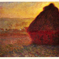
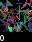
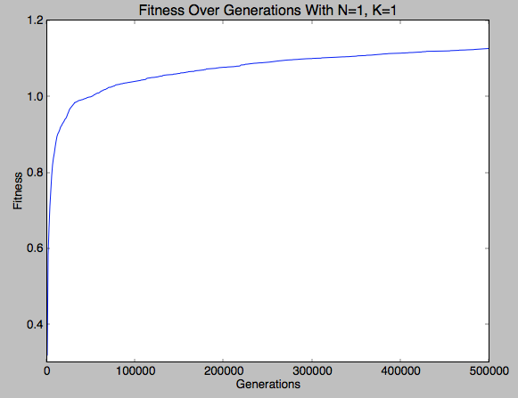
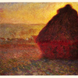
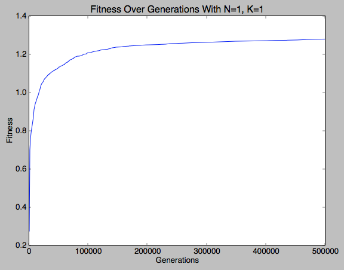
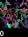

N=4, K=2 gave the best result



N=4, K=1 gave the best result


N=2, K=1 gave the best result



N=1, K=2 gave the best result


N=2, K=1 gave the best result
EECS 492 A1 Results
Steve Chapel
September 18, 2011
The purpose of this project is to recreate Roger Alsing's work on genetic programming to create art. The population consists of approximations to a given image. Each image uses P polygons, where P=100 for the results on this page. N is the population size and K is the number of new children created per generation. T is the number of generations displayed in each animation. The fitness of the image is a measure of how closely it matches the original image. The learning curve shows how the fitness of the best approximation improves over time. The 3D graphs depict how the fitness after 25000 generations varies with N and K.
| Original image | Approximation | Learning curve | ||
|---|---|---|---|---|
| 216×174 pixels |
P=100, N=1, K=1 |
 | N=4, K=2 gave the best result | |
| 128×128 pixels  |
P=100, N=1, K=1 |
 | N=4, K=1 gave the best result | |
| 328×189 pixels |
P=100, N=1, K=1 |
N=2, K=1 gave the best result |
||
| 32×32 pixels |
P=100, N=1, K=1  |
|
N=1, K=2 gave the best result |
|
| 128×128 pixels |
P=100, N=1, K=1 |
N=2, K=1 gave the best result |

Mutations used:
Random triangles were created by picking a point on the image with uniform distribution, then adding a Gaussian distribution of mean 0 and standard deviation 20% of the image width to the point to obtain the vertices. Random colors were picked using uniform distribution over the RGB color space.
Parents were selected from an array of individuals sorted in decreasing order of fitness
using the index Rand.nextInt(Rand.nextInt(n) + 1) where Rand.nextInt(m) returns a
random integer uniformly distributed between 0 and m-1 inclusive. This made the more fit individuals
more likely to be chosen for crossover.